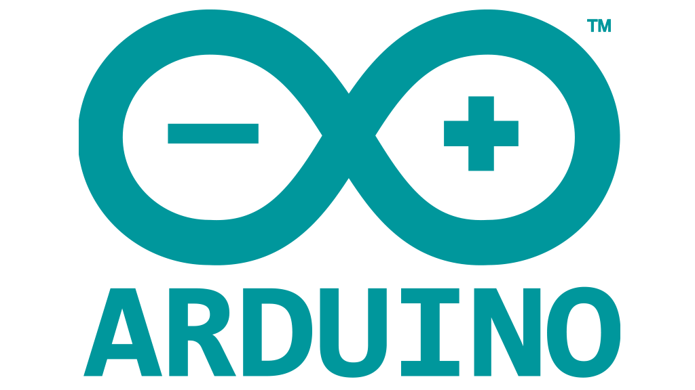
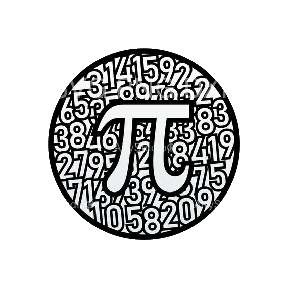
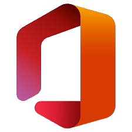

Mes compétences
Ma formation en DUT Informatique me permet d'acquérir des compétences en programmation. J'ai aujourd'hui des bases solides en C/C++ et j'apprends le langage Python en parallèle, mais ce n'est pas tout !
Programmation
J'ai commencé la programmation au lycée avec les cours de Sciences de l'Ingénieur (SI) en première. Nous utilisions des cartes programmables de type Arduino Uno qui nous permettaient de concevoir de petits circuits électroniques (chenillard LED, petits moteurs, buzzer, capteur de distance). L'un de nos projets consistait en la reproduction du système d'information voyageur des rames de métro parisien : nous avons associé des mesures de distances recueillies par un capteur à une position d'une rame sur la ligne. Ainsi, il nous était possible de programmer l'allumage, l'extinction ou encore le clignotement de chaque diode en fonction de la position de la rame.
Le langage Arduino est une version dérivée du langage C, que j'ai retrouvé en première année de DUT Informatique en cours d'IAP (Introduction à l'Algorithmique et à la Programmation), ce qui m'a donné une certaine avance dans la compréhension des fondamentaux du code. J'ai ensuite découvert le langage C++ qui élargit les possibilités de programmation, et j'ai décidé d'apprendre le langage Python sur mon temps libre.
J'ai également des bases en langage HTML et CSS, ce qui me permet de réaliser le site que vous lisez actuellement.
Mathématiques
Mon cursus scolaire m'a transmis de nombreuses connaissances en mathématiques et en logique. Je maîtrise de nombreux outils mathématiques tels que la trigonométrie, les nombres complexes, le calcul matriciel, différentiel ou encore intégral.
J'étudie la logique depuis 2017, ce qui me donne une certaine aisance en matière de raisonnement. Je maîtrise les opérateurs fondamentaux.
Bureautique
La réalisation de nombreux projets et travaux de groupe depuis le lycée m'ont permis de maîtriser la suite logicielle Microsoft Office. Je suis apte à rédiger des rapports de qualité traitant de domaines variés et de concevoir une présentation PowerPoint associée qui saura sortir du lot et marquer les esprits.
Je maîtrise également Excel, qui me permet d'appuyer mes présentations avec des statistiques pertinentes, ainsi que d'autres logiciels plus spécialisés tels que Publisher pour la conception d'affiches et de cartes en tout genre et Visio pour la réalisation d'organigrammes et de plans d'architecture en 2 dimensions.
Langues
 Au cours de ma vie, j'ai eu l'occasion d'apprendre plusieurs langues, que ce soit à l'école ou en dehors par envie personnelle. Voici un tableau dans lequel figure mon niveau de maîtrise de chacune d'entre elles ainsi que d'autres informations telles que la durée d'apprentissage.
Au cours de ma vie, j'ai eu l'occasion d'apprendre plusieurs langues, que ce soit à l'école ou en dehors par envie personnelle. Voici un tableau dans lequel figure mon niveau de maîtrise de chacune d'entre elles ainsi que d'autres informations telles que la durée d'apprentissage.
Dernière mise à jour : décembre 2019.
| Langue |
Niveau CECRL |
Premiers mots |
Certification |
| Français |
C2 |
2001 |
Projet Voltaire |
| Anglais |
B2 |
2008 |
B2 First |
| Espagnol |
B2 |
2012 |
DELE B2 |
| Corse |
A1 |
2016 |
Non |
| Chinois |
A1 |
2019 |
Non |